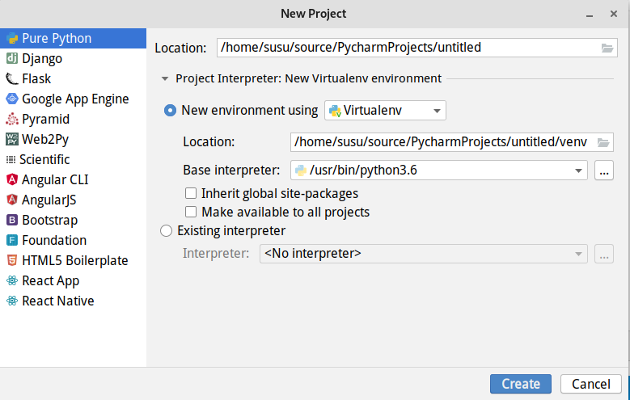
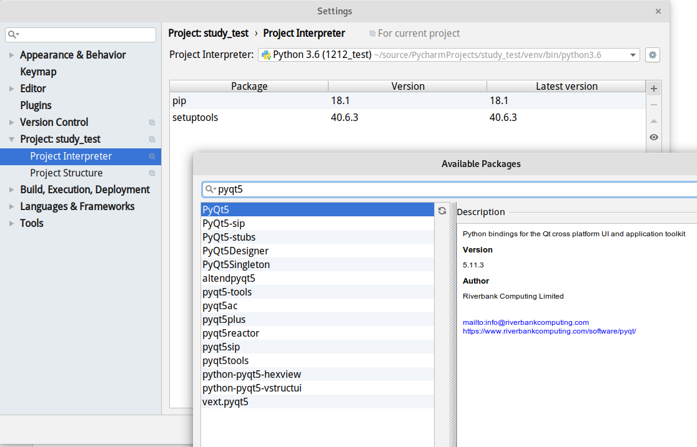

PyQt是Python GUI编程可选方案之一。可以用来代替Python内置的Tkinter。Python可以的其他GUI库有PyGTK、wxPython等。
PyQt是Qt库的python绑定,QT还有可用于 C、Java、Perl 和 Ruby 的绑定。
在Linux上安装PyQt的方法有很多,这里我们展示以下几种.
利用 virtualenv 进行pip安装
这里就直接使用Pycharm来演示吧!
首先打开Pycharm,然后创建一个项目,选择使用Virtualenv

创建成功以后项目中会生成一个venv的文件夹,这是一个虚拟的python环境,你可以通过命令行中pip安装您需要的包,也可以在setting中选择project[项目名称]–> project interpreter 搜索安装需要的包.如下图所示

使用Debian deb包安装
为什么[目前]不使用 Debian 的 pip 进行安装
首先需要声明,书写本文时 Debian Testing python3-pip 的版本是 9.0.1-2.3,而Python官方的pip已经是18.1了,为什么Debian不对pip进行版本升级呢?其实这是一系列历史遗留问题导致的
由于Debian 同时支持Python2/3 在打包的时候也想做到软件包同时支持py2/3,这是一个很好的想法,也通过一些办法实现了,但是某天pip上游说从某版本开始不支持py2了,这个时候那些自动化打包脚本就不能使用了,因为脚本会生成同时支持py2/3的包,但是9.0.1+++以上就不支持py2了.这会导致一系列的包被破坏,所以目前Testing中pip一直没有升级,这样的软件包还有很多,但是不用担心,因为Debian已经开始移除Python2,虽然不知道什么时候所有的py2包能全部移除完毕,但是那时,pip安装pyqt5就不是问题啦!